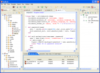

RadRails is an open source IDE for Ruby and the Ruby on Rails framework, first released as a production quality tool in 2007. The current release adds in great features to boost Ruby on Rails application development for beginners and advanced users alike.
Contents |
About RadRails
  RadRails
RadRails
{kind=link}
Highlights include the following features:
- Code Assist on Ruby and RHTML files
- Outliner for code structure
- Debugging support
- Integrated server views
- Dynamic testing
- Integrated RoR deployment options
- Winner of the 2006 EclipseCon community award for Best Open-Source Eclipse-based tool.
- Cross-platform support
- Free and open source licensed under the Aptana Public License, v1.0.
RadRails Pro
RadRails Pro is available to all licensed users of Aptana Studio Pro and the features are enabled as soon as the Pro license key is added to Studio (and RadRails is installed, in either order).
Pro Key Features:
- Integrated Profiler
- JSON Editor
Setting Up RadRails
Install Aptana Studio, then add RadRails using the Plugins tab on the My Aptana page. RadRails requires Aptana Studio version 1.1.7 or later, preferably v1.2 or later.
- Prepping for and Installing RadRails on Windows Vista
- Configuring RadRails
- Uninstalling RadRails and other plugins
Working with RadRails
- Tutorial: Get Rolling with Ruby on Rails in RadRails
- Starting a new RadRails project
- Using RadRails Views
- About the Ruby Profiler Perspective
- Configuring the Eclipse SQL Explorer plug-in for RadRails
- Fast Rails Debugging using Aptana Rails IDE
- Eclipse Monkey scripting with Ruby